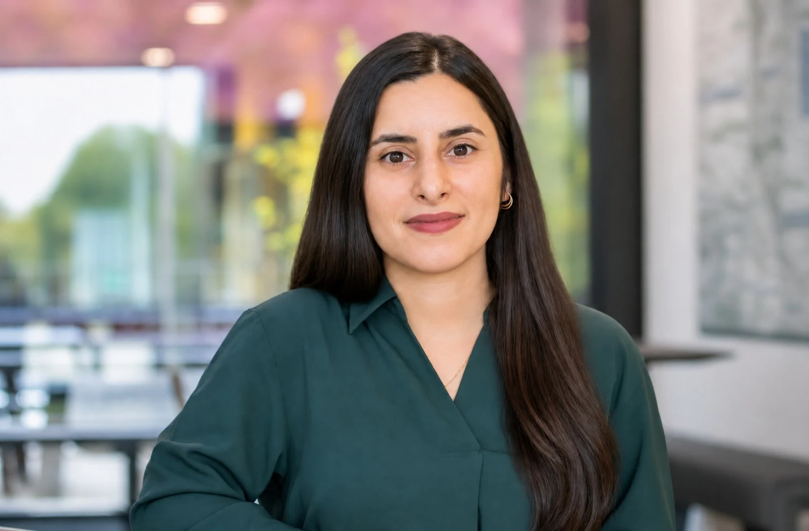
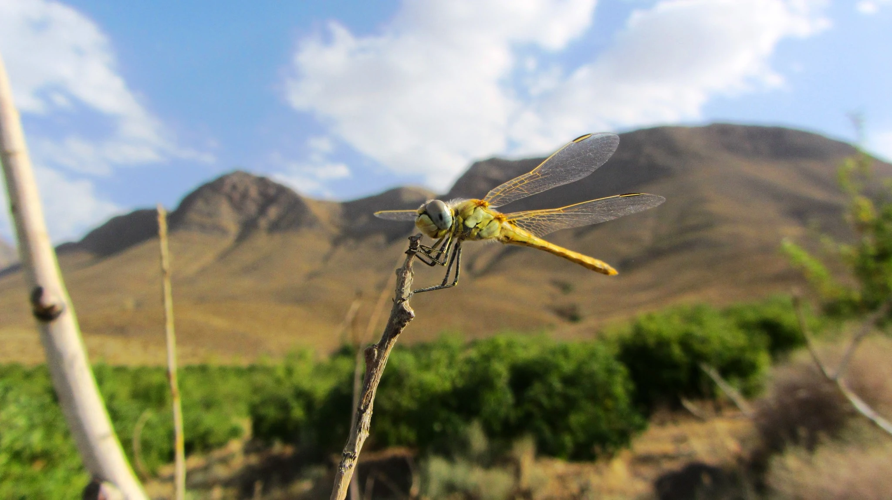
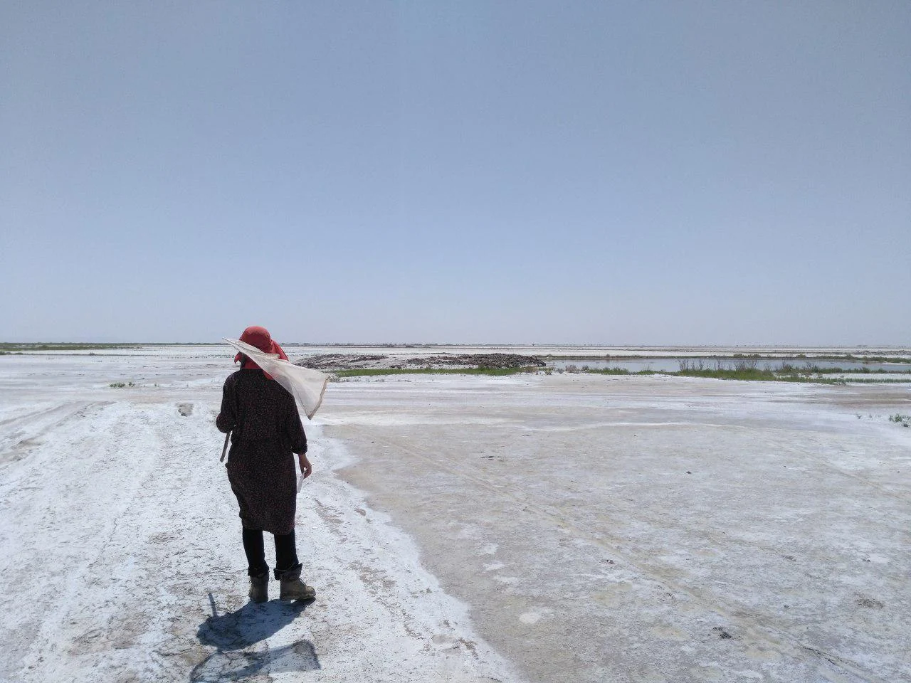

Postdoctoral Researcher
German Centre for Integrative Biodiversity Research (iDiv), Leipzig, Germany
Georg Forster Research Fellow
Biodiversity Researcher | Quantitative Ecologist
Exploring how environmental change shapes biodiversity and species distributions, with a particular commitment to highlighting biodiversity in understudied regions.



I have always been the person who interrupts a conversation to point out a bird, an interesting spider, or an unusual plant. People often tell me that I have extraordinary eyes, but I think what I really have is a deep curiosity about nature and a fascination with the living world around me.
That curiosity has shaped my scientific career. My research combines field ecology, ecological theory, and quantitative modelling to understand the processes that shape biodiversity patterns, species distributions, and ecological communities.
Much of my research has focused on the arid landscapes of the Middle East, where biodiversity remains poorly documented. Working primarily with dragonflies and damselflies (Odonata), I have investigated ecological questions ranging from population ecology and species distribution modelling to broader patterns of taxonomic, functional, and phylogenetic diversity across the region. Although Odonata have been the main focus of my work, my research interests extend beyond any particular group of organisms or ecosystem.
Working in understudied regions has made me aware of how incomplete our picture of biodiversity can be. While some regions are extensively documented, others remain poorly represented in biodiversity datasets, potentially biasing our understanding of global biodiversity patterns. My research aims to address these gaps by exploring ways to integrate ecological modelling, biodiversity data mobilization, and locally adapted citizen science. Through these efforts, I hope to bring greater scientific attention to understudied regions and contribute to a more complete understanding of global biodiversity.

This project examines biodiversity–environment relationships across contrasting climatic regions with varying levels of biodiversity data availability.

This project developed comprehensive Odonata occurrence and functional-trait datasets to investigate freshwater biodiversity, water availability, and land use in the Middle East.

This project investigated the population ecology of Ischnura elegans in an arid region of Central Iran.
German Centre for Integrative Biodiversity Research (iDiv), Leipzig, Germany
Georg Forster Research Fellow
Lund University, Sweden
Shiraz University, Iran
Shahid Beheshti University, Iran
Center for Wildlife Studies, USA
OngoingProfessional training in quantitative ecological methods and their applications to wildlife research, conservation, and environmental management.